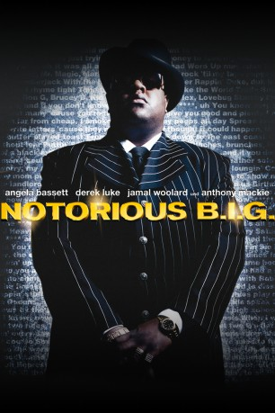

#4943 Notorious B.I.G.
Alternativ: Notorious
 
 IMDB-Wertung: 6.6 / 10
IMDB-Wertung: 6.6 / 10  Metascore: 0
Metascore: 0 
Zu Beginn der Neunzigerjahre hat sich Christopher Wallace in seinem Viertel in Brooklyn bereits einen Namen gemacht als Drogendealer und Zuhälter. Nach einem Gefängnisaufenthalt tut er sich mit dem ambitionierten Produzenten Puff Daddy zusammen und nimmt für ihn unter dem Namen The Notorious B.I.G. sein erstes Album auf, das sich als Sensationserfolg erweist. Wallace schließt Freundschaft mit dem bereits berühmten Westküsten-Rapper Tupac Shakur. Als Shakur in seinem Aufnahmestudio angeschossen wird, gibt er B.I.G. die Schuld. Ein wilder Krieg beginnt.
Jahr: 2009
Dauer: 128 Minuten
FSK: 12
Land: USA Studio: Fox Searchlight PicturesTonspuren: DTS - ,
Untertitel: Deutsch,
Auflösung: 1080p (1920x800) Größe: 11776 MB
Genre: Drama, Musik, Krimi, Biographie
Regisseur: George Tillman Jr.
Drehbuch: Akiva Goldsman
Soundtrack:
Darsteller:
- Jamal Woolard als Christopher 'Biggie' Wallace
- Momo Dione als Record Executive at Party
 Derek Luke als Sean 'Puffy' Combs
Derek Luke als Sean 'Puffy' Combs- Dennis L.A. White als Damion
 Marc John Jefferies als Cease
Marc John Jefferies als Cease- Menyone DeVeaux als Hot Girl #1
- Christopher Jordan Wallace als Biggie, Age 8-13
 Angela Bassett als Voletta Wallace
Angela Bassett als Voletta Wallace- Cyrus Farmer als Selwyn
 David Costabile als Mr. Webber
David Costabile als Mr. Webber- Julia Pace Mitchell als Jan
- Naturi Naughton als Lil' Kim
 Aunjanue Ellis als Sandy
Aunjanue Ellis als Sandy- Valence Thomas als 50 Grand
- Edwin Freeman als Mister Cee
 Kevin Phillips als Mark
Kevin Phillips als Mark John Ventimiglia als Detective Farelli
John Ventimiglia als Detective Farelli Anthony Mackie als Tupac Shakur
Anthony Mackie als Tupac Shakur- Charles Malik Whitfield als Wayne
- Antonique Smith als Faith
- Ginger Kroll als Debbie
- Hisham Tawfiq als Fatigue Guy
- I.N. Sierros als Cop, Quad Studios
 Sean Ringgold als Suge Knight
Sean Ringgold als Suge Knight- Brandi Nicole Feemster als 'Person on the Street'
- Nina Daniels als Person on the Street
- Brandon Bailey als Fan #1
- Osas Ighodaro Ajibade als Party Girl , uncredited
- Jonathan Gabriel Charles als Howard Student , uncredited
- Shawntay Dalon als Howard University Member , uncredited
- Sarah Donnelly als Party Girl , uncredited
- Carlitos Dosouto als Puerto Rican , uncredited
 Fatimah Hassan als Faith's Friend / Person on Street , uncredited
Fatimah Hassan als Faith's Friend / Person on Street , uncredited- Allen Holloway als Chico , uncredited
- Alina Kaufman als Party Guest , uncredited
- Chris Kelley als Gangster , uncredited
 Richard Pryor als Himself , archive footage, uncredited
Richard Pryor als Himself , archive footage, uncredited- Ahmad Russ als Record Producer at Party , uncredited
- Craig Scribner als Fan , uncredited
 Harry L. Seddon als Jail Guard Walking Biggie , uncredited
Harry L. Seddon als Jail Guard Walking Biggie , uncredited- Ricky Smith als Wally
- Amanda Christopher als Keisha
- Jasper Briggs als Damion, Age 8-13
- Jermaine Denny als Primo
- Naquon 'Nino Brown' Jackson als Nino Brown
- Jason Croasdaile als Security Thug
- Cimone Campbell als Cute Girl Assistant
- Duane Nakia Cooper als Howard Emcee
- Miya Granatella als Hot Lady
- Susie Da Silva als Jessica
Datei: X:\2009(N-Z)\Notorious B.I.G. (2009, FSK12, 1920x800).mkv seit 03.12.2016
Festplatte: HD 2009(G-Z)-2010(A-F)
 Es gibt insgesamt 99 Filme in der Gruppe '2009(N-Z)'
Es gibt insgesamt 99 Filme in der Gruppe '2009(N-Z)'